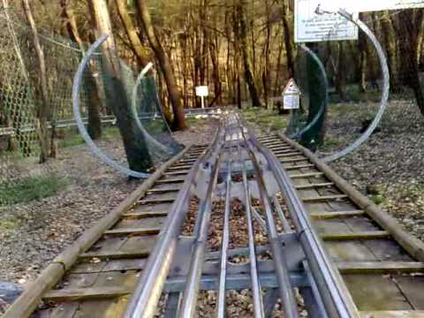

Magyarország legizgalmasabb erdei bobpályája Miskolctapolcán a Csónakázó-tó és a Barlangfürdő közvetlen szomszédságában található. Különleges élményt kínál kicsiknek és nagyoknak a mintegy 850 m hosszú, egész évben üzemelő alpesi bobpálya. Az évszázados fák között sikló bobok a szánkózás élményét adják minden évszakban, ahol mindenki maga választja meg a számára élményt nyújtó sebességet. Különös élményt nyújt esti időszakban a kivilágított pályán lesiklani. A pálya gyártója a bobpálya építésében világelső német Wiegand társaság. A német minőség garantálja a pálya teljes biztonságát, azt bárki használhatja 3 éves kortól 99 éves korig, egyedül vagy párosan. Osztálykirándulás esetén csoportos kedvezmény.